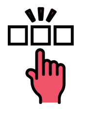
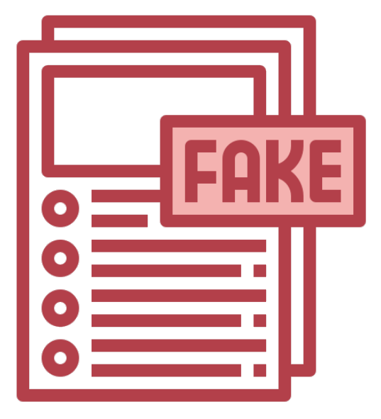

Free 30 Days Trial
Identify a
signature's
authenticity
This webapp uses image recognition through machine
learning to validate the true signature of the user.
Click to VerifyHow to Use Signify?

Step 1: Upload.
Upload your first three signatures that will be placed in the dataset as a data of comparison for other signature attempts.

Step 2: Select.
Select the Image of your signature which will be scanned to determine whether it is genuine or forged.

Step 3: Scan.
The system will identify the percentage of the signature accuracy and will tell whether the signature is forged or genuine.

Incidence of Forgery
Signature forgery and impersonation are generating substantial breaches in policies and legal compliance procedures, as money and benefits are diverted to the wrong people, putting a burden on economic resources and, as a result, affecting the economy. Fake signatures are one of the primary areas of fraudulent practices that many regulatory agencies are struggling to deal with.
Importance of Signature
Each signature is unique depending on an individual's handwriting, variations of strokes, and preferred design and style. It is hard to resources and, as a result, affecting the economy. Fake signatures are one of the primary areas of fraudulent practices that many regulatory agencies are struggling to deal with. replicate unless there is an incidence of skilled forgery happened. However, there is still a basis for an original signature to discern its characteristics against a fake one. This is where image recognition is needed where it can be able to use different algorithms to carefully verify an original signature. It can be able to detect in a small amount of time while giving a higher precision and accuracy which a normal human can't do.